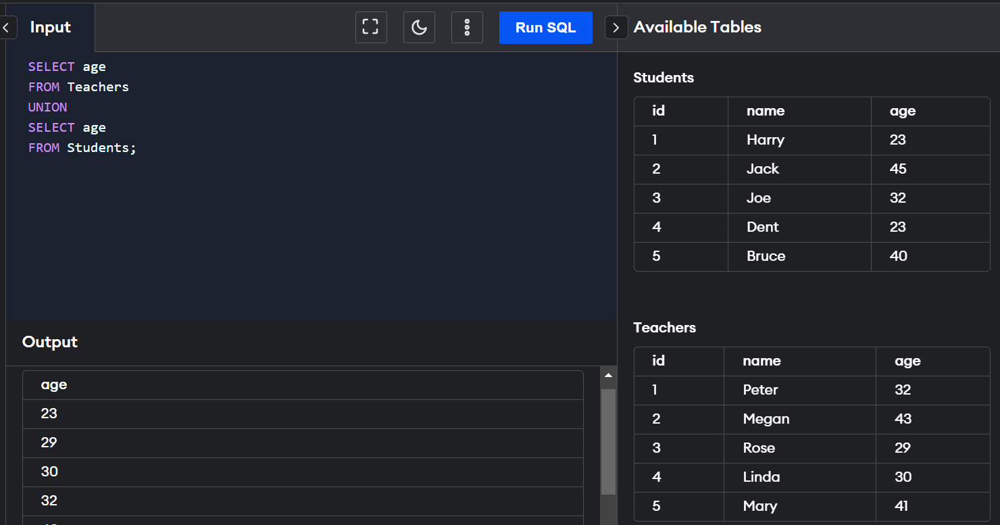

SET Operators
SET operators are special type of operators which are used to combine the result of two queries.There are
certain rules which must be followed to perform operations using SET operators in SQL. Rules are as
follows:
1. The number and order of columns must be the same.
2. Data types must be compatible.
1. UNION:
UNION will be used to combine the result of two select statements.
Duplicate rows will be eliminated from the results obtained after performing the UNION operation.
2. UNION ALL
This operator combines all the records from both the queries.
Duplicate rows will be not be eliminated from the results obtained after performing the UNION ALL operation.
3. INTERSECT
It is used to combine two SELECT statements, but it only
returns the records which are common from both SELECT statements.
4.MINUS
It displays the rows which are present in the first query but absent in the second query with no duplicates.
